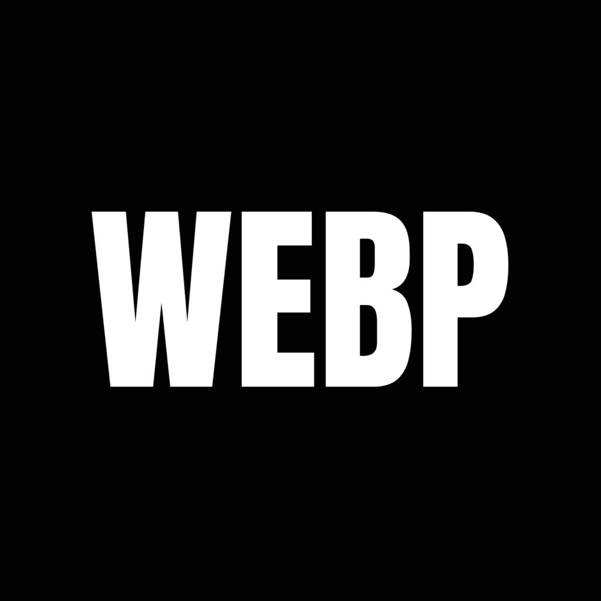

Design
Bildformate im Web – welche wirklich zählen
Wir klicken, scrollen, wischen – und überall lauern Bilder. Große, kleine, scharfe, unscharfe. Manche laden ewig, andere sind sofort da. Und genau darum geht’s: Das richtige Bildformat ist keine Nebensache, sondern entscheidet darüber, ob eine Website elegant läuft oder keuchend hinterherhinkt.
Fangen wir mit den Klassikern an. JPEG – das gute alte Arbeitspferd. Seit Jahrzehnten dabei, solide, verlässlich. Ideal für Fotos und weiche Farbverläufe. Nur: Wenn man’s zu sehr komprimiert, sieht’s schnell aus wie durch nassen Karton. Dann lieber ein bisschen mehr Speicher gönnen.
PNG ist das Gegenteil: gestochen scharf, verlustfrei, mit Transparenz. Perfekt für Logos, Icons und alles, was klar und sauber wirken soll. Für Fotos ist’s aber übertrieben – da frisst das Format Speicher, als gäbe es kein Morgen.
Und dann kommt WebP – der Star der Gegenwart. Von Google entwickelt, schnell, schlank, vielseitig. Es kann Transparenzen, Animationen und spart richtig Datenvolumen. Für moderne Websites ist WebP im Moment das Maß aller Dinge.
Noch besser, sagen die Mutigen, ist AVIF – das neue Wunderding. Winzige Dateien, hervorragende Qualität. Nur leider noch nicht überall kompatibel. Aber das wird kommen, und dann wird’s das neue Normal sein.
Und wenn’s um Logos oder Icons geht, da führt kein Weg an SVG vorbei. Vektoren, die nie pixelig werden, egal wie groß Sie sie ziehen. Leicht, sauber, elegant – so muss das sein.
Jetzt mal zu den Größen. Auch hier gilt: weniger ist oft mehr.
Ein Hero-Image darf ruhig 1600 bis 2000 Pixel breit sein – das ist die große Bühne. Bilder im Textbereich liegen gut bei 800 bis 1200 Pixeln. Thumbnails brauchen nicht mehr als 400 bis 600, und Icons oder Logos sind mit 512 Pixeln meist schon im Luxussegment.
Wichtig ist, die Bilder responsive einzubinden – also so, dass sie sich an den Bildschirm anpassen. Niemand braucht auf dem Handy ein 4K-Bild.
Und weil heute alles in Bewegung ist: ein Wort zu Videos.
MP4 ist der Standard, läuft überall. WebM ist die sparsamere Alternative, und AV1 gilt als Zukunftsformat – winzig klein, gestochen scharf. Aber bitte: keine unkomprimierten Dateien hochladen. Das ist, als würden Sie einen ganzen Umzugskarton verschicken, nur um eine Postkarte zu zeigen. Tools wie HandBrake helfen beim Schrumpfen, ohne dass’s jemand merkt.
Was bleibt?
Wer seine Bilder und Videos klug wählt, schenkt seiner Website nicht nur Schönheit, sondern auch Tempo. Google dankt es, Besucher:innen auch. WebP ist im Moment der goldene Mittelweg, AVIF steht schon bereit. SVG bleibt unschlagbar für Logos, und Videos sind willkommen – solange sie nicht die halbe Leitung verstopfen.
Und wenn Sie keine Lust haben, alles per Hand zu optimieren: Es gibt clevere Helfer. Tools wie ImageOptim, TinyPNG oder Squoosh machen das im Handumdrehen. Und ein CDN sorgt dafür, dass Ihre Bilder weltweit so schnell laden, wie Sie „PageSpeed“ sagen können.
Am Ende ist es wie so oft: Wer mit Sinn und System arbeitet, braucht keine Tricks. Nur gutes Design, gute Technik – und ein bisschen Geduld beim Laden hat dann sowieso niemand mehr nötig.
Zahlen & Fakten zu Bildformaten im Web
- 60 % der Ladezeit einer Website entfallen auf Bilder.
- Hero-Images: 1600 – 2000 px Breite
- Content-Bilder: 800 – 1200 px
- Thumbnails: 400 – 600 px
- Icons / Logos: bis 512 px (idealerweise SVG)
- WebP: beste Balance aus Qualität & Dateigröße
- AVIF: bis 40 % kleiner als WebP – Zukunftsformat
- JPEG: Standard für Fotos
- PNG: ideal für Transparenzen & Screenshots
- SVG: skalierbar & verlustfrei für Logos & UI
- Videoformate: MP4 / WebM / AV1